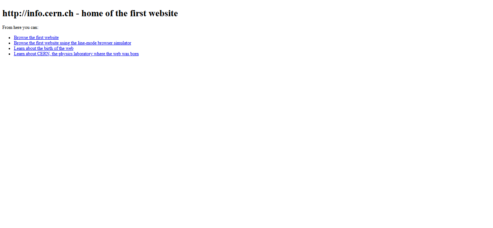
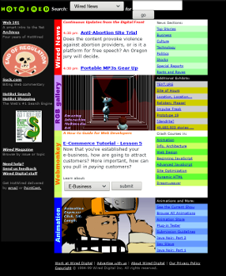
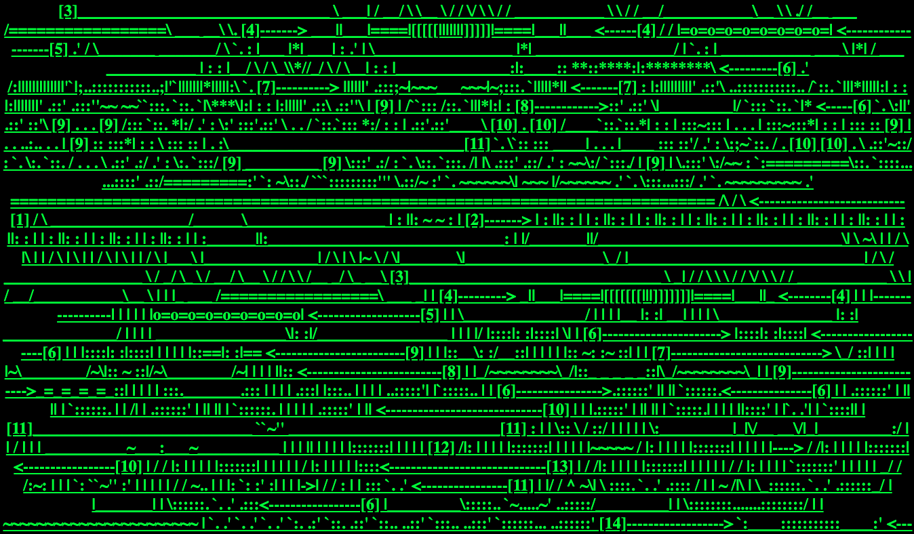
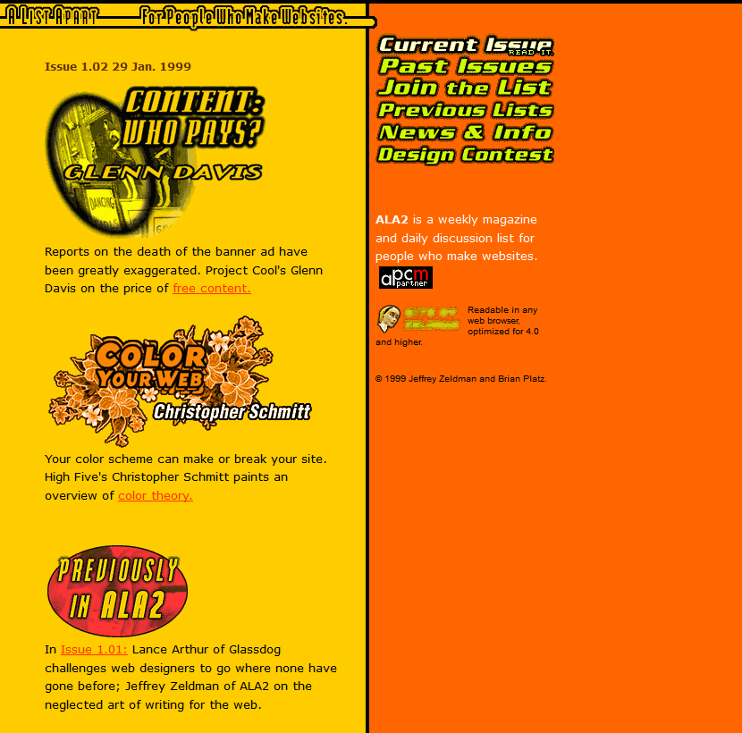
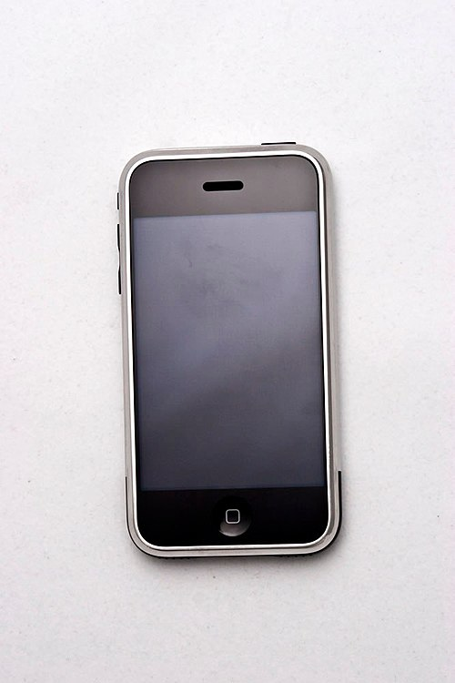
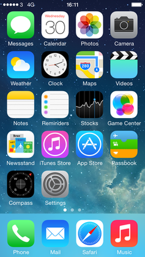
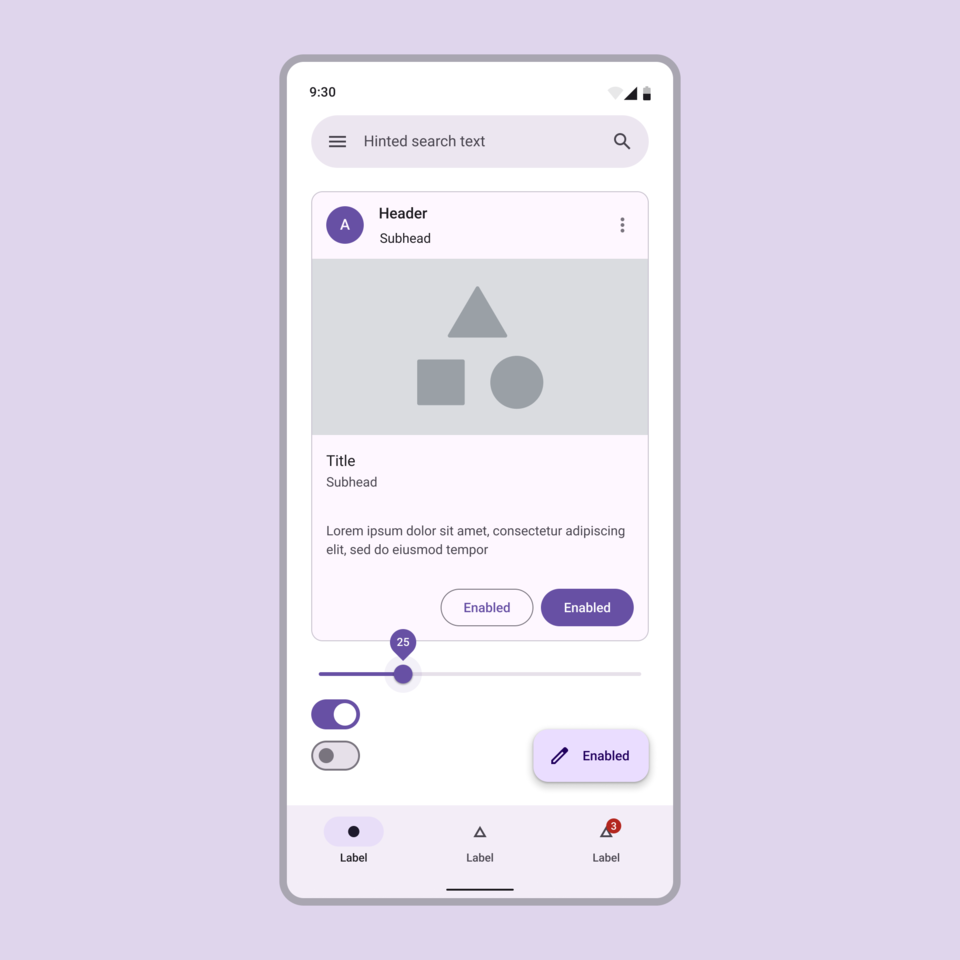
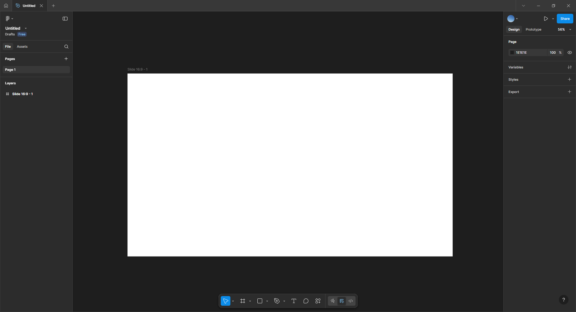

Era 1 — The Web, c. 1990–2005 Web

info.cern.ch (the first web page) — Tim Berners-Lee, 1991, CERN, Geneva. The first page on the World Wide Web: a plain text document describing what the web was and how to use it. No graphics, no layout, no styling beyond the browser's default. Its significance is historical rather than visual, but it sets the floor for every page that followed: a link is a link, and the document is universally addressable by URL. The original page is preserved on CERN's servers and is still accessible today.

NCSA Mosaic — Marc Andreessen et al., 1993, University of Illinois. The first web browser to render inline images alongside text. Before Mosaic, images on the web opened as separate files in external viewers; after Mosaic, a page could be a layout. Within eighteen months of its release, the population of the web jumped from a few thousand scientists to millions of ordinary users. The screenshot of Mosaic rendering the NCSA home page is one of the most historically loaded images in the entire module.

HotWired — Wired magazine, launched October 1994 The first commercial magazine-style website, and the first site to sell banner advertising. HotWired treated the browser window as a layout surface rather than a document viewport: navigation bars, grids, colored backgrounds, custom typography via images. Its designers (including Barbara Kuhr and Jeffrey Veen) had to invent conventions that did not yet exist. Much of the first-generation web design vocabulary is traceable to HotWired's early issues.

jodi.org — Joan Heemskerk & Dirk Paesmans, 1995 A net.art project that treats the browser as a medium for glitch, chaos, and strategic misuse. Early versions of the page appear to be a catastrophic system failure (green ASCII characters cascading on a black background); viewing the source reveals a carefully composed ASCII diagram of a hydrogen bomb. jodi.org is the counter-tradition to HotWired: it insists that the web is not a magazine, and that its native material is code, error, and the gap between what the browser shows and what the markup says.
Space Jam website — Warner Bros., 1996 The promotional site for the 1996 Bugs Bunny / Michael Jordan film. Tiled starfield background, orange-on-purple links, animated GIFs, a planet-based navigation map. Left online, essentially unaltered, for nearly three decades. It has become the canonical artifact of 1990s commercial web design: every visual tic the era was later embarrassed about is preserved here in pristine condition.
Killing the Web: The Art and Science of Web Design — David Siegel, 1997 The book in which Siegel codified the "table hack" that most professional web designers used throughout the late 1990s: abusing HTML table tags to force pixel-precise multi-column layouts that HTML had never been designed to support. Siegel's own site, high5.com, was for several years the most-copied commercial site on the web. The book is now a historical document of a craft that is extinct.

A List Apart — Jeffrey Zeldman, founded 1998 A web magazine written by and for web designers, which through the early 2000s became the primary advocate for the Web Standards movement: the argument that pages should be built with semantic HTML and CSS rather than Siegel's table hacks, that content and presentation should be separated, and that accessibility and device-independence should be built in from the start. Zeldman's 2003 book Designing With Web Standards codified the position; A List Apart published the essays that made the case.
useit.com — Jakob Nielsen, 1995–2012 Nielsen's personal site, deliberately designed as a polemic against the visual excesses of 1990s web design. Plain text, blue links, minimal images, no color beyond the defaults. Nielsen's argument was that users skim rather than read, that decoration is noise, and that fast-loading pages respect the user's time. The site is aesthetically ugly in a way that was intentional; Nielsen wanted to demonstrate that usability had nothing to do with visual sophistication. The tension between his position and that of visual designers like Zeldman shaped the decade.
Designing Web Usability — Jakob Nielsen, 2000, New Riders The book-length statement of Nielsen's position. Along with Steve Krug's Don't Make Me Think (2000) and the Nielsen Norman Group's consulting reports, this is the text that carried the UX methodology out of HCI research labs and into the daily practice of commercial web design.
iTunes Music Store — Apple, launched April 2003 Not a visual landmark but a structural one. The Music Store was the first mass-market demonstration that designed interface plus designed business model could disassemble an entire industry (the album-oriented record business) and reassemble it around single-track downloads. Every later argument about platform design as economic design rests on the precedent the iTunes Store set.
Era 2 — Mobile & Platforms, c. 2005–2020 Mobile

iPhone launch (original iOS Home Screen) — Apple, 2007 The device that turned the screen into a surface the user holds. The original Home Screen's skeuomorphic icons (a leather address book, a yellow legal pad, a spinning compass) were designed under Scott Forstall to reassure users unfamiliar with touch interfaces that they already knew how to use the apps. The skeuomorphic vocabulary would last until iOS 7 in 2013, when Jony Ive replaced it with a flat, typographically-driven visual language.

iOS 7 redesign — Apple, Jony Ive (design lead), 2013 The moment mobile interface design collectively abandoned skeuomorphism. iOS 7 replaced leather textures and drop shadows with flat color fields, ultra-thin typography (San Francisco would follow in 2015), and a new physics-based approach to motion. The redesign was controversial on release (the legibility of the thin type was widely criticized) and is now the default visual language for most mobile software. It is the closest thing the mobile era has to its own International Typographic Style moment.

Material Design — Google, Matias Duarte (design lead), launched 2014 The first comprehensive design system published as a public document by a major platform. Material codified a "material metaphor" — interface elements as layered sheets of virtual paper that cast shadows and respond to touch — along with detailed specifications for type, color, motion, and component behavior. Material Design's site at material.io is the model every subsequent design system has followed: publicly documented, versioned, and implemented in code.
Microsoft Inclusive Design Toolkit — Microsoft Design, Kat Holmes (design lead), 2016 A free, publicly released set of documents that reframed accessibility as inclusion and inclusion as a design methodology. The toolkit's central argument — that designing for people with permanent disabilities produces solutions that benefit people with temporary or situational limitations (a person with one arm in a cast, a parent holding a baby) — reshaped how the industry talked about accessibility. Holmes's 2018 book Mismatch: How Inclusion Shapes Design is the theoretical companion.
Atomic Design — Brad Frost, 2013 (web article) / 2016 (book) The methodology that taught the web community how to think about design systems. Frost's atoms / molecules / organisms / templates / pages hierarchy provided a shared vocabulary for component-based interface design at a moment when front-end frameworks (React, Vue) were converging on the same ideas from the engineering side. Atomic Design and React together form the intellectual scaffolding for the contemporary design-system era.

Figma — Dylan Field & Evan Wallace, launched in public beta 2016 A browser-based interface design tool built on WebGL. Figma's significance is not primarily visual but structural: it moved design work into a multiplayer, URL-addressable surface, collapsing the distinction between the designer's file, the shared document, and the reviewable artifact. By 2020 it had replaced Sketch and Adobe XD as the default tool of professional interface design. Adobe attempted to acquire it in 2022 for twenty billion dollars; regulators blocked the deal in 2023.
Airbnb Design Language System (DLS) — Airbnb, Karri Saarinen (design lead), published 2016 The first widely publicized, comprehensively documented in-house design system at a major consumer internet company. Airbnb's DLS articulated a complete visual language (type, color, grids, components), connected that language to engineering via shared tokens, and published the process as a series of Medium posts that became the how-to for an entire industry. By 2018, every serious consumer-facing product team had (or claimed to have) a design system.
GOV.UK — UK Government Digital Service, launched 2012 (design system published 2019) The public-facing website of the United Kingdom government, and the Design System that documents it. GOV.UK is the most extensive argument for the claim that plain, accessible, legible interface design is a public good rather than a stylistic preference. Every page is typographically restrained, keyboard-navigable, screen-reader-friendly, and fast on bad connections. The GOV.UK Design System (design-system.service.gov.uk) is open-source and has been adopted by dozens of other governments.
Low-tech Magazine — Kris De Decker, solar-powered site launched 2018 A magazine about the history of technology that publishes on a website hosted on a solar-powered server. When the batteries run low, the site goes offline. The visual design is aggressively minimal: dithered black-and-white images, system fonts, no third-party trackers, no JavaScript beyond the essential. A page load on Low-tech Magazine uses a small fraction of the energy of a page load on a typical news site. It is currently the clearest statement of the sustainable-web argument.
Stripe.com — Stripe, 2011–present (notable redesigns 2014, 2017, 2021) The corporate marketing site that taught the developer-tools industry how to present itself. Stripe's site has, across successive redesigns, combined enormous typography, custom gradient artwork, and live code examples embedded in the page, with an aggressive commitment to performance. Its visual style has been copied so widely that it has become a genre (sometimes called "Stripe-ified" design).
Instagram and the square photograph — Instagram (launched 2010) Not a single designed object but a format. Instagram's original 1:1 aspect ratio forced photographers (professional and amateur) to recompose for a frame most cameras had not shipped since the Rolleiflex. By 2015 the constraint had reshaped the visual vocabulary of commercial photography, food styling, and interior design worldwide. When Instagram relaxed the square requirement in 2015, the format persisted anyway. One of the clearest examples of a software default shaping a global aesthetic.
Era 3 — AI & Generative Systems, c. 2020–Present AI
GPT-3 — OpenAI, released June 2020 (API) Not a designed object in any conventional sense, but the first widely available language model capable of generating coherent long-form text on demand. GPT-3's release was the moment the design industry started talking seriously about generative text as a material. Within eighteen months, dozens of writing tools (Jasper, Copy.ai, Notion AI) were wrappers around the GPT-3 API.
DALL-E — OpenAI, announced January 2021 / DALL-E 2 released April 2022 The first image-generation model to produce results coherent enough for professional consideration. DALL-E 2's public release in 2022 (initially via a waitlist) is probably the clearest single date for the beginning of the AI era in visual design: it is the moment when designers started discussing, in public, what generative images would do to stock photography, illustration, and concept art.
Midjourney — Midjourney, Inc., launched July 2022 The image generator that reached an enormous non-professional audience first, partly because it ran inside Discord rather than a custom interface. Midjourney's aesthetic (painterly, high-saturation, atmospheric) became so recognizable that "a Midjourney image" became a genre within six months of release. The first major legal disputes about training data, authorship, and style imitation organized themselves around Midjourney outputs.
ChatGPT — OpenAI, launched November 2022 The consumer chat interface that brought large language models to a mainstream audience. ChatGPT's interface design — a plain chat window with almost no visual chrome — is itself the design statement: the intelligence is supposed to be in the conversation, not in the app. ChatGPT reached one hundred million users faster than any previous consumer product, and triggered the platform response (Google Gemini, Anthropic Claude, Meta Llama) that has defined the AI era.

Refik Anadol, Unsupervised — MoMA, New York, November 2022 – March 2023 A large wall-sized generative video installation trained on the image metadata of MoMA's own collection. The piece cycles continuously, producing swirling, dreamlike visualizations that the museum describes as "machine hallucinations" of its own holdings. Unsupervised is the first AI-generated work to be installed prominently at a major art museum in a way that claims aesthetic authorship for the system itself rather than for the artist using it as a tool. The piece is genuinely beautiful and genuinely controversial.
Figma AI, v0 by Vercel, Framer AI — 2023–2024 A cluster of design and prototyping tools that integrate generative models directly into the interface design workflow. v0 (launched 2023) accepts a text prompt and produces a React component. Framer AI generates page layouts from descriptions. Figma AI (announced 2024) is the set of generative features built into the dominant interface design tool. These tools are changing too fast to be evaluated historically, but they are the direct descendants of Memphis's slogan that the tool itself should be expressive: in 2024 the tool is also a collaborator.
Stable Diffusion and the open-model community — Stability AI, released August 2022 The first image generation model released with weights openly downloadable and runnable on consumer hardware. Stable Diffusion is technically less capable than the closed models at any given moment, but its openness produced an enormous ecosystem of fine-tunes, LoRAs, and custom interfaces (Automatic1111, ComfyUI). For the purposes of design history, it is the moment when generative image-making stopped being entirely mediated by three or four large corporations.
Apple Vision Pro launch materials — Apple, 2024 Whatever one thinks of the device itself, the visual language Apple introduced to describe "spatial computing" — translucent interface panels floating in real rooms, eye-tracked focus states, hand-gesture controls — is the most serious attempt yet to articulate a design system for head-mounted displays. The Vision Pro's Human Interface Guidelines are the first comprehensive HIG for an HMD platform written by a company with Apple's historical influence. Whether spatial computing becomes a mainstream platform or a footnote, the Vision Pro design materials will be part of the record.
Theory — Texts and Ideas
The Design of Everyday Things — Don Norman, 1988 (revised 2013), originally published as The Psychology of Everyday Things The foundational text of the user-centered design movement. Norman's argument that objects have affordances, that good design makes the right action obvious, and that when someone misuses a thing the designer (not the user) is at fault, became the operating assumption of an entire generation of interface designers. The 2013 revision updated the examples for the digital era without changing the core theory, a rare case where a design book survived a forty-year gap.
Don't Make Me Think — Steve Krug, 2000 (revised 2014) The shortest serious book on web usability, and for many years the one most often handed to new designers. Krug's central claim is that users do not read, do not figure things out, and do not forgive friction; therefore interfaces should be self-explanatory at a glance. The book has the unusual distinction of being demonstrably correct and genuinely useful, which is rare in the UX literature.
Designing With Web Standards — Jeffrey Zeldman, 2003 The book that codified the Web Standards movement's technical argument: semantic HTML, CSS for presentation, JavaScript for behavior, accessibility as a baseline rather than a feature. Zeldman's advocacy — through the book, through A List Apart, and through speaking — is one of the reasons the modern web works at all.
A Dao of Web Design — John Allsopp, 2000, A List Apart The essay Ethan Marcotte credits as the intellectual origin of responsive design. Allsopp argued in 2000 that the web's native condition is fluidity, that print-style fixed layouts fight the medium, and that designers should embrace the unknown shape of the user's screen. Marcotte's 2010 essay Responsive Web Design (also in A List Apart) turned the argument into a practical methodology and named the movement.
Responsive Web Design — Ethan Marcotte, 2010 (essay) / 2011 (book, A Book Apart) The essay that named the methodology and the short book that taught everyone how to do it. Marcotte's three ingredients — fluid grids, flexible images, and media queries — became the basic technical approach of an entire decade of front-end work. "Responsive" is now assumed rather than argued for, which is the highest honor a design methodology can receive.
Mismatch: How Inclusion Shapes Design — Kat Holmes, 2018, MIT Press The book-length companion to Microsoft's Inclusive Design Toolkit. Holmes reframes disability as a mismatch between a person and their environment, rather than as a property of the person, and argues that designers are the ones who create or resolve those mismatches. Along with Sara Hendren's What Can a Body Do? (2020), it is the defining text of the inclusive-design turn.
The Making of a Manager — Julie Zhuo, 2019 A book about design management rather than design itself, but important because it documents how the design profession at major internet companies grew from small craft teams into organizations of hundreds. Zhuo was VP of Design at Facebook when she wrote it, and the book is in many ways a record of how design management became a distinct discipline during the 2010s.
Ruined by Design — Mike Monteiro, 2019 The angry book. Monteiro's argument is that designers at large technology companies have been morally complicit in platform harms (dark patterns, surveillance, addiction, misinformation) and that the profession needs to license itself like architecture or medicine. Ruined by Design is the clearest single statement of the ethical reckoning the design industry has been circling for most of the 2020s.
World Wide Waste — Gerry McGovern, 2020 The book that made the environmental cost of digital interfaces concrete: how much electricity a page load actually uses, how much server weight a video stream carries, how much carbon a bloated site emits over a year of visits. McGovern's numbers are disputed in detail but the direction of the argument is not, and the book is the rallying point for the sustainable-web conversation.
Atlas of AI — Kate Crawford, 2021, Yale University Press Not a design book strictly speaking, but the one designers working with AI now reach for first. Crawford traces the physical infrastructure of contemporary machine learning — the mines, the data centers, the power grids, the labor — and argues that calling the result "intelligence" obscures what it actually is. For design students, the book is the corrective to the marketing language of the AI platforms.